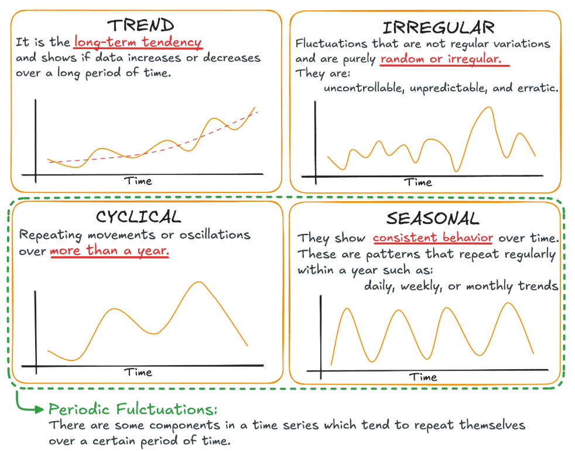

Time Series and Forecasting Fundamentals
1. Sequence models
A sequence includes any data where the order of the data items matters (e.g. a sentence is an ordered sequence of words, not just any sequence of words). In other words, sequences are data points that can be meaningfully ordered, so that earlier observations provide information about later observations.
-
Simple definition of Forecasting --> You should be able to take a slice of past observations and use them to get a better-than-chance prediction of later observations.
-
Sequences can be either the input or the output of a machine learning model. According to this perspective, we can fit sequence models into three types:
- One-to-sequence: one input is passed in and the model generates a sequence as the output. A typical example is image captioning where one image is given as input to generate its textual description (e.g. a few sentences)
- Sequence-to-one: a sequence is the input to the model and one output is generated. Sentiment analysis is a typical sequence-to-one problem, based on the comments or few sentences, the machine can generate one rating.
- Sequence-to-sequence: sequence is both the model's input and output. Google Translate is an example of a model that delas with sequence-to-sequence problems
Applications of sequence models
- Solve forecasting problems (e.g. sales, demand, weather and traffic forecasting)
- Solve natural language processing (NLP) problems (e.g. machine translation, speech recognition and sentiment analysis)
- Solve computer vision problems (e.g. image or video generation, captioning)
2. Time series patterns
A time series is a series of data points indexed/listed in time order. This is in contrast with other sequence models, such as NLP (where the order is based on the position of words in sentences) or computer vision (where the order relies on frames), etc...

From https://www.statology.org/understanding-time-series-in-python/Although time series can take different shapes and sizes, they show a common few patterns, including - Trend pattern: a gradual increase or decrease pattern over time (e.g. increasing housing price in the past decade; decreasing birth rate since 1980) - Seasonal pattern: a recurring pattern over successive periods. Data is affected by calendar factors (e.g. time of the day, day of the week or month of the year) and the pattern is repeated at a known and fixed frequency (e.g. peak hours at a coffee shop or hiloday seasons of a retail store). A time series may show multiple seasonality. - Vertex AI does a godd job in detecting multiple seasonalities in time series - Cyclical pattern: it exhibits fluctuations in a recurring pattern, which however do not occur at a fixed frequency or the same amplitude. The time series showing a cyclical pattern is often affected by economic cycles (e.g. unemployment rate over the past few decades). - A cyclical pattern is easily confused with a seasonal pattern: - Their major difference relies on the frequency (or regularity) of the pattern. If the fluctuations are at a fixed frequency and are related to calendar factors, the pattern is seasonal. - Another difference is that the amplitude of the seasonal pattern is usually the same, whereas the amplitude of the cyclical pattern can be different - A third difference (which might not apply to all cases) is the length of one cycle. A seasonal pattern normally happens within a season (e.g. year one or two) whereas a cyclical pattern normally occurs during a long period of time (e.g. one or more decades) - Noise (irregular) pattern: it shows random fluctuations rise and fall around a flat line (or a number). There isn't a predictable trend. A good forecasting model should in theory catch the noise from the historical data and simply perpetuate the last value forward as a flat forecast (naive forecast). Identifyin noise answers a crucial question: when should you stop fitting the model?
A time series is often an aggregation or a combination of these patterns. Time series analysis aims to discover these patterns and make predictions by using different techniques.
3. Time series analysis
What type of use cases involve a time series?
There are two types: - Forecasting: you predict the future (a sequence of values) by identifying the patterns and trends of historical data. It has been overwhelmingly used in business paractice and will be the focus of the rest of the course - Analysis: you classify different time series, discover clusters and detect anomalies
What are the methods and techniques used in time series forecasting?
- Qualitative methods: rely on human expert judgement. You normally use it when no historical data is available or applicable. For example, the sales forecasting in a startup company might depend on a combination of factors such as industry, economy and competing companies instead of its own historical data
- Quantitative methods: used when the past data is available and can be quantified. Also, you can assume that the pattern in the past data remains unchanged in the future. Two major quantitaive techniques can be used:
- Statistical models
- Machine Learning models (deep learning)
AutoRegressive Integrated Moving Average (ARIMA) models
- ARIMA is a family of statistical models used in time series forecasting (variants include AR, MA, ARMA and seasonal ARIMA or SARIMA)
- BQ ML on Google Cloud is based on the ARIMA model
Machine Learning (ML) models
- Deep learning (DL) ML models have been used for forecasting:
- convolutional neural networks (CNNs)
- deep neural networks (DNNs): deep neural networks with multiple hidden layers
- recurrent neural networks (RNNs): a neural network with short-term memory
- gate recurrent units (GRUs)
- long short-term memory networks (LSTMs): a neural network with long-term memory
- gate recurrent units (GRUs): an improved and simplified variant of LSTM
- transformers: they introduce self-attention and feed-forward layers in both decoder and decoder architectures
- Tree-based ML models
- extreme gradient boosting (XGBoost)
Benefits of using DL models for forecasting: - they can process a large amount of diversified data: - rich metadata (e.g.: product attributes, location attributes) - historical factors (e.g.: inventory, weather) - factors known in the future (e.g.: planned promotions or events, holidays) - unstructured data (such as text) - they can model complex scenarios: - cold start or new items - short product life cycles - burstiness, sparsity - hierarchical forecast
AutoML with Vertex AI Forecast chooses and configures DL models for you. It uses a technology called neural architectural search, to automatically search the best fit models among hundreds of ML models and tune the parameters for you. You can focus on specifying the business requirements, identify the features that contribute to the forecasting and apply the foreacasting resutls to make downstream business decisions.
4. Forecasting notations
Definitions used by Google
Univariate versus Multivariate
- Univariate time series: you are forecasting future data using only the historical time series data (e.g. historical sales to predict future sales)
- Multivariate time series: you forecast future data using multiple factors (or features) (e.g. adding advertisement and holiday predictors' data, etc ...)
One versus Multiple time series
- One time series: you forecast one variable in one "section" (or grouping; e.g. you forecast daily sales for one store and one product)
- Multiple time series: you forecast one variable across multiple "sections" (or groupings; e.g. you forecast daily sales for different stores and/or different products)
Sparse versus Dense time series
- Sparse time series: it contains mostly zeros and few non-zero values
- Dense time series: it contains mostly non-zero values
Bursty time series
- A bursty time series data has a mix of sparse and non-sparse data and there are irregular shifts of magnitude in values.
- You should separate the sparse and non-sparse data if categories are distinct (
Short lifecycle product
A product sold for a brief period. Its sales' history is too short to capture any seasonal patterns/trends (e.g. high-end fashion items, special edition electronic items and higly seasonal special food items).
ML models are usually better at forecasting these short-time series than conventional statistical methods
Cold start forecasting
A cold start problem happens when there is no historical data (and methods such as ARIMA are not applicable; ML models are recommended)
Feature type (Attributes vs Covariates)
The feature type must be specified when configuring a forecasting model:
- Attribute: a static feature that doesn't change over time and is always available at forecast time (e.g. item colour and product size
- Covariate: a dynamic feature that changes over time. It can be:
- Available at the forecast time: e.g. national holidays and planned promotions
- Unavailable at the forecast time: e.g. actual weather